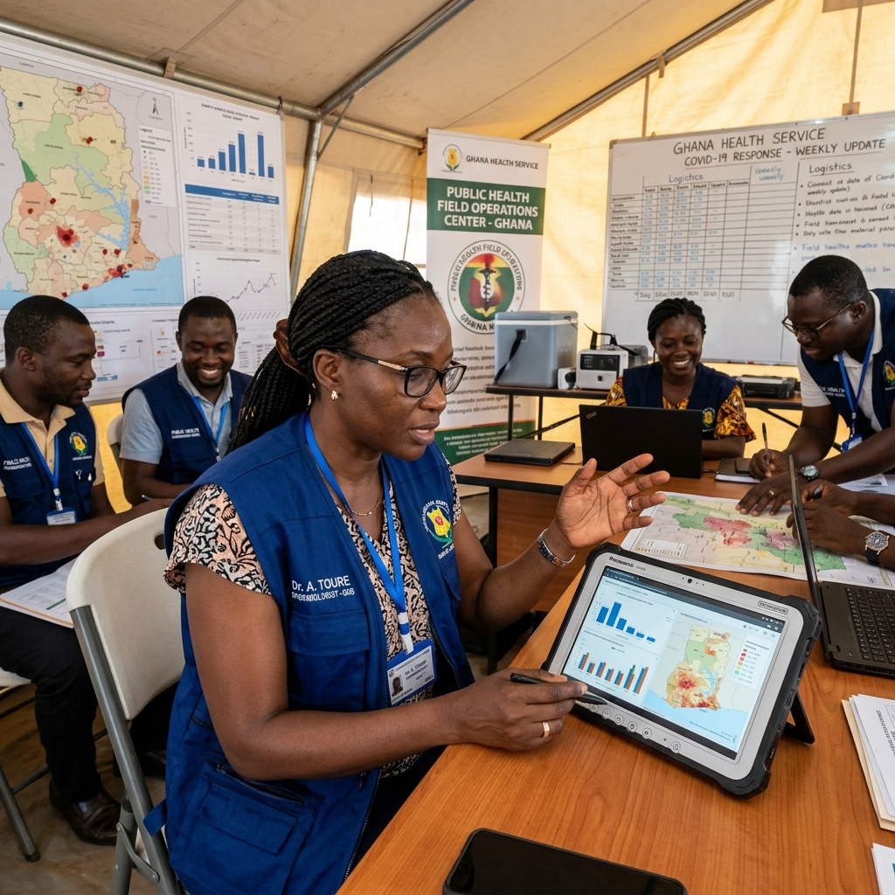

Surveillance Épidémiologique
DAVYCAS International accompagne les pays dans la détection précoce des épidémies, le suivi des événements de santé publique, l’analyse des données et la coordination de la réponse aux urgences sanitaires.

Détecter plus tôt, comprendre plus vite, agir plus efficacement
DAVYCAS International appuie les pays dans la mise en œuvre des activités de surveillance avec pour objectif une détection précoce des épidémies et de tout événement inhabituel ou d’urgence de santé publique. L’organisation contribue également à la gestion des flambées épidémiques, à l’élaboration des plans de riposte, à la mobilisation des ressources et au renforcement des relations avec les partenaires nationaux et internationaux.
Détection précoce
Identification rapide des événements inhabituels et des signaux d’alerte en santé publique.
Gestion des flambées
Appui à la coordination, à la préparation et à la mise en œuvre des réponses aux épidémies.
Appui aux pays
Accompagnement technique pour les plans de riposte, la mobilisation des ressources et les partenariats.
Des appuis techniques sur toute la chaîne de surveillance
Développement des outils et guides de surveillance
Collecte et traitement des données
Monitorage de la qualité des données
Suivi des tendances des maladies et événements
Suivi des indicateurs de surveillance
Validation des données de surveillance
Suivi du profil épidémiologique et bactériologique
Planification opérationnelle des activités
Investigations épidémiologiques de terrain
Production des bulletins épidémiologiques
Appui technique pour le suivi et la supervision
Coordination de la gestion des flambées
Participation aux réunions de surveillance
Une méthode structurée pour renforcer la surveillance
Préparation
Élaboration des outils, guides, plans de surveillance et protocoles d’appui.
Collecte
Accompagnement des équipes dans la remontée des données de surveillance et des signaux d’alerte.
Analyse
Traitement, validation et interprétation des données épidémiologiques et bactériologiques.
Restitution
Production de bulletins, tableaux de bord et supports d’aide à la décision.
Réponse
Appui à la coordination des flambées, aux plans de riposte et aux actions de terrain.
Transformer les données de surveillance en décisions utiles
La surveillance épidémiologique repose sur la qualité, la rapidité et la fiabilité des données. DAVYCAS accompagne les institutions sanitaires dans l’amélioration des systèmes de collecte, la validation des données, le suivi des indicateurs et la production d’informations exploitables pour la prise de décision.
Données fiables
Indicateurs suivis
Tendances analysées
Décisions rapides
Des produits DAVYCAS pour renforcer la surveillance

STELab
Solution digitale de traçabilité des données épidémiologiques et des échantillons de laboratoire.
Découvrir STELab
SITEB
Système intégré de transport des échantillons biologiques pour sécuriser le circuit terrain-laboratoire.
Découvrir SITEBUne surveillance renforcée pour une réponse plus rapide
Alertes détectées plus tôt
Données mieux validées
Flambées mieux coordonnées
Décisions mieux orientées
Vous souhaitez renforcer votre système de surveillance ?
DAVYCAS International accompagne les institutions sanitaires dans le développement des outils, la gestion des données, les investigations de terrain et la coordination des réponses aux urgences de santé publique.